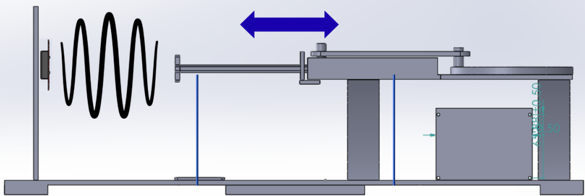

Instantaneous Velocity Crank Slider Measurement Device Experiment
A 3D-printed crank–slider drives a deflector linearly while a stationary HB100 sensor measures Doppler-related IF content. Magnets and paired Hall sensors resolve crank angle, so HB100 shifts can be tied to specific phases of a non-uniform motion law and interpreted in terms of instantaneous velocity—validated on the bench with a multi-channel oscilloscope alongside MCU logging.
Capstone paper
Overview
The capstone ties together mechanical kinematics, microwave motion sensing, magnetic angle referencing, and mixed-signal measurement. A crank–slider (rotating disk plus translating rod) moves a deflector back-and-forth linearly; the HB100 is fixed on the vertical beam and looks at that motion. Because the linkage consists of a linear rod and a symmetric disk, the slider's velocity is non-uniform and the radial/phase dependence of speed matters: the scientific objective is to relate Doppler shifts to where the crank is(what the crank angle is) and thus to the instantaneous target velocity implied by the mechanism at that moment in rotation. By observing the instantaneous velocities at certain crank angles, we can confirm if the slider's motion is non-uniform.
Hardware setup
- HB100 (stationary) — mounted on the vertical beam, aimed at the moving microwave target / deflector driven by the crank–slider.
- Crank–slider mechanism — rotary input produces back-and-forth motion of the deflector along the linkage (disk + linear rod), giving a non-uniform velocity profile over each cycle.
- Deflector / target — an aluminum plate is mounted to the slider and deflects the microwaves as it moves back and forth. It's important for it to be metal, otherwise the microwaves can easily pass through the ABS filament
Crank angle & Hall sensors
Under the rotating disk, magnets are arranged so their passage can be detected by a hall sensor from below. A Hall sensor produces pulses as magnets sweep by, giving repeatable angular events within a revolution.
A second, reference Hall sensor provides a distinct phase reference so the system can resolve where the crank is in rotation.
Together, these channels support registering HB100 observations to specific crank positions when you analyze non-uniform motion.
Bench instrumentation
An oscilloscope is used with three inputs observed together:
- HB100 IF output — Doppler-related signal from the module.
- Hall (index) — pulses from the magnet-pass sensor.
- Reference Hall — signal defining rotational position / phase reference.
Viewing these traces in parallel is what lets you relate shifts in the HB100 waveform to specific crank angles and to the timing structure of the mechanism, and to compare against ESP32-captured waveforms where applicable.
Measurement goal
Because the crank–slider produces non-uniform motion, instantaneous speed (and thus the Doppler-relevant velocity component you care about) varies with crank angle. The experimental approach is to measure HB100 frequency or shift content at known crank angles—using the Hall timing and reference—to infer or constrain instantaneous velocity for that linkage geometry, rather than assuming constant linear speed.
R&D workflow (lab)
- Mechanism — CAD, 3D printing, mechanical tuning for travel, magnet placement, and sensor clearance.
- Microwave path — HB100 mounting and aim; IF conditioning to usable levels for scope and MCU.
- Indexing — Hall + reference Hall wiring and verification of angular reference.
- Correlation — multi-channel scope captures; align HB100 features to crank phase.
- Logging — ESP32 stream to host where used; cross-check against scope traces.
- Analysis — relate shifts to crank angle and instantaneous-velocity interpretation; document uncertainty.
Figures
